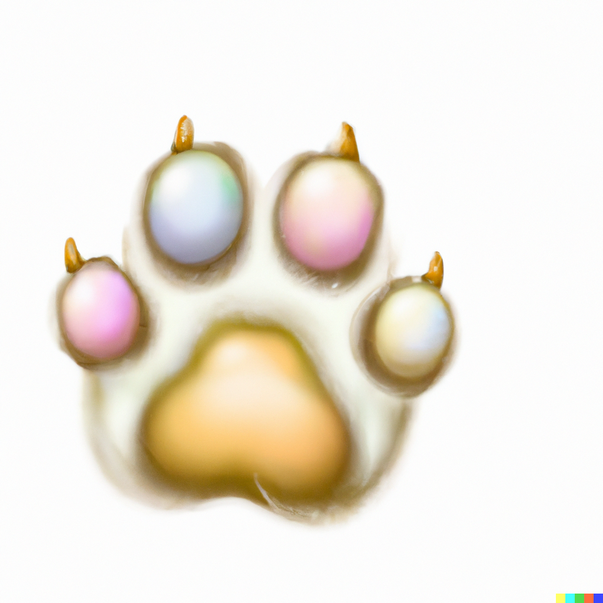

<nav class="cabecalho d-flex flex-row justify-content-evenly">
  <div class="logo d-flex flex-row align-items-center">
    
    <h1>IdentificaCão</h1>
  </div>
  <div class="menu d-flex flex-column flex-wrap justify-content-end align-items-center">
    <div class="menu-topo">
      <h3>Encontrei um Animal</h3>
    </div>
    <div class="menu-baixo d-flex flex-row justify-content-between">
      <h3>Sobre</h3>
      <h3>Contato</h3>
      <h3>Login</h3>
    </div>
  </div>
</nav>

